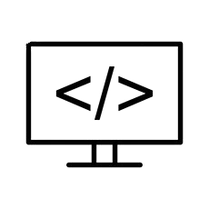
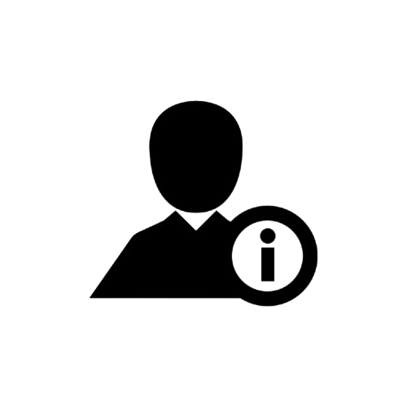
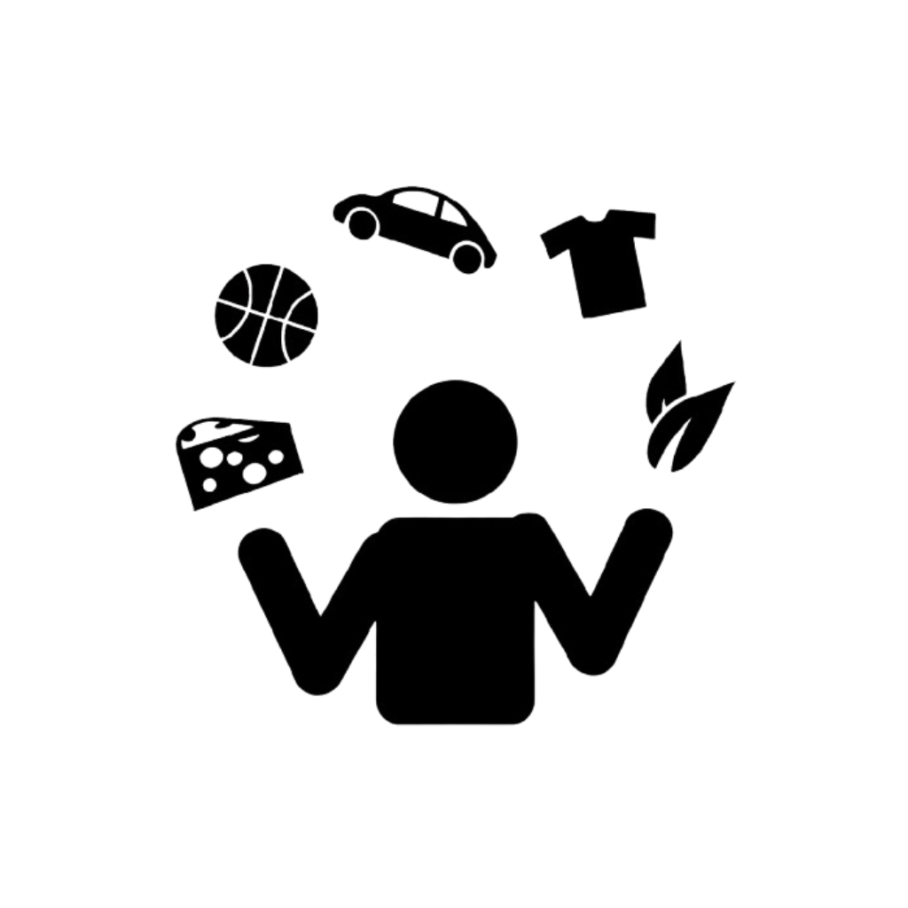

Olá,
Meu nome é Herik T. Rodrigues, tenho 24 anos e sou natural de Santa Catarina.
Sou bacharel em Sistemas de Informação pela Unisul e curso Data Science and Analytics pela USP/Esalq.
Habilidades / Skills
Atributos que adquiri ao decorrer dos anos pelos estudos e experiência profissional

Linguagens de programação
Conhecimento em Java, Javascript, PHP, Python, HTML, CSS.Structured Query Language
Conhecimento em SQL, criação de banco de dados e consultas, updates, etc..Rápido aprendizado
Possuo a habilidade de aprendizado rápido, o que me permite assimilar novas informações e adquirir novas habilidades de maneira eficiente e eficazMente Profissinal
+3 Anos de experiência no ambiente Profissinal em diversas áreas de uma empresa (Atendimento ao cliente, compras, vendas, marketing, administração, etc..), isso me permitiu ter uma mente profissinal e focada.Mais informações sobre mim
Complemento de informações pessoais, hobbies e considerações finais

Informações pessoais
Sou Herik Trombetta Rodrigues, 24 anos, de São José (SC). Bacharel em Sistemas de Informação pela Unisul, atualmente cursando ADS na mesma instituição e pós-graduação em Data Science and Analytics pela USP/Esalq.
